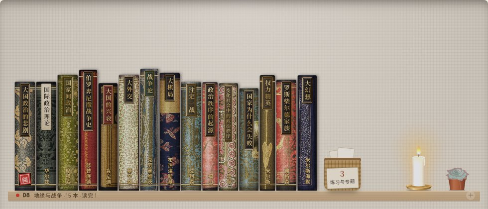
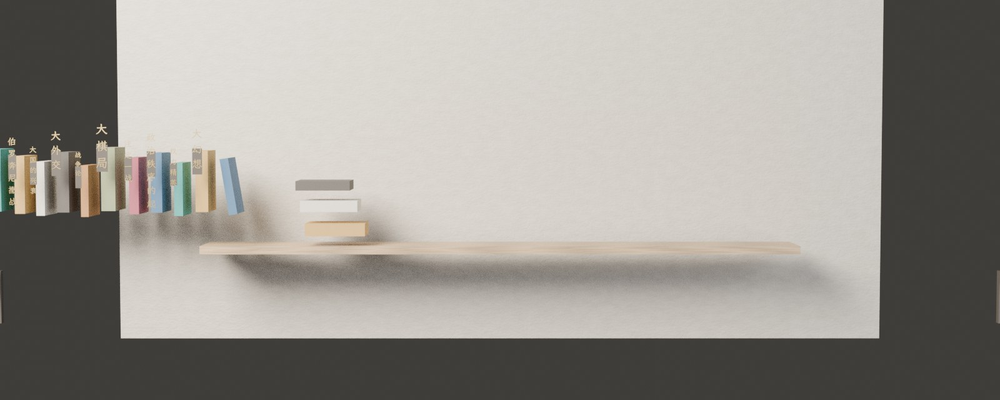
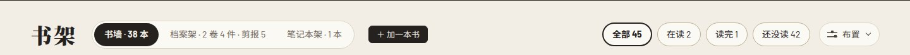
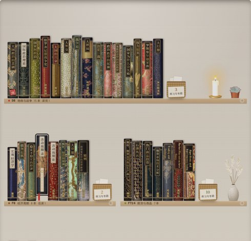
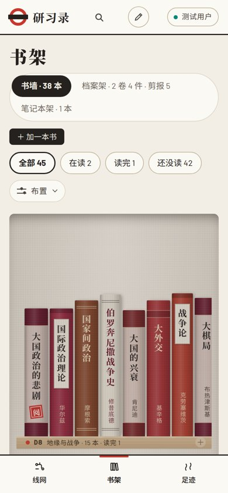
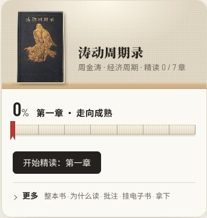
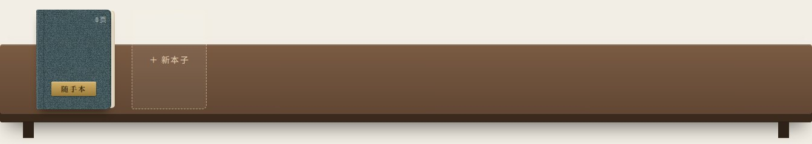

一 · 光与木同一层书架：上面是现在线上的样子，下面是改后的 CSS 样稿。改的只有四件事：墙面换成两层纹理（大尺度的左上暖光加小尺度灰泥颗粒）、书架板有了 18 像素厚度与板下影、书底有接触阴影、书在墙上有朝右下的软投影。书本身没动。


二 · 页头与层距页头收成一行：大字标题去掉（和主导航重复），四个筛选收成一个下拉，布置和加书留在右边。层距改成跟最高的书走，加 36 像素余量。左边是现在四层的节奏（缩到一半），右边是改后同样四层。



三 · 展台与笔记本架进房间展台从白卡改成一只斜面木书托：书立在托上，托下是黄铜挡条，书名、进度（书口样式）、按钮收在托下面的一块木边面板里。笔记本架用同一块橡木，有斜面与透视，本子微仰、有影。两件都和书架板一种木头、一盏灯。


四 · 书的生动一格里允许一处有意义的乱：末尾一本斜靠（这一格最近碰过的书），读完的平放成一摞、盖阅印。右边是老书皮书脊的模板：在封面切条上叠五道竹节、一块题签框、上下金线，书脊就有了书脊的结构。
五 · 动效连贯静态只能画帧。两个最该补的镜头：书架载入时四层自上而下错开 40 毫秒落定（之后墙是稳的，不做视差）；打开一盒从盒子原位放大过渡到桌面，而不是整屏切黑。全部 200 到 320 毫秒，缓出，不弹。
六 · 字体同一组文字：左边是现在的 Barlow 加思源黑体，右边是霞鹜文楷（开源楷体，可自带）。只换房间里的小字：书架标牌、笔记本正文与页脚、展台的一行说明；标题仍是思源宋体，线网图与仪表盘仍用 Barlow。
读《大国政治的悲剧》第三章：陆权与海权的"水的阻隔力"。他把这当作大国不敢跨海投送全部陆军的理由。
库存周期三年一轮的说法，和涛动周期录里的基钦周期是同一个东西。找一组螺纹钢库存数据验一下。
读《大国政治的悲剧》第三章：陆权与海权的"水的阻隔力"。他把这当作大国不敢跨海投送全部陆军的理由。
库存周期三年一轮的说法，和涛动周期录里的基钦周期是同一个东西。找一组螺纹钢库存数据验一下。